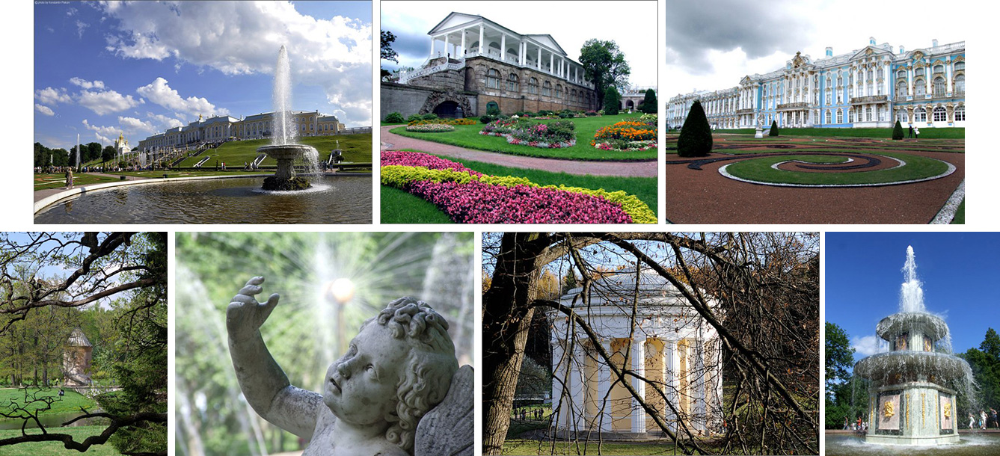
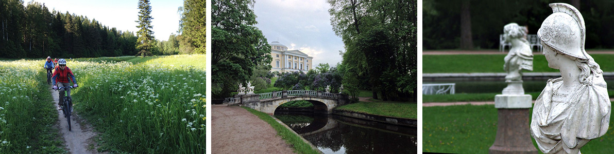
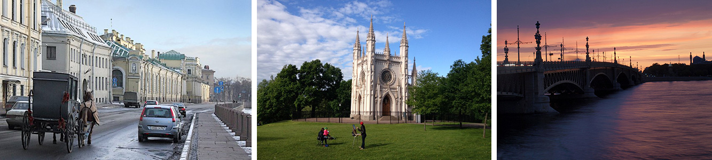
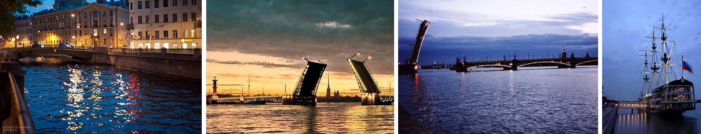

Какой самый красивый город Европы? Ответ на этот вопрос вполне очевиден. Не понятно, почему мы, живя в нём самом, не делали программу велосипедного знакомства с Петербургом и его великолепными окрестностями? Теперь ошибка исправлена: мы такую программу делаем. Она перед вами.
Нет города красивее Петербурга. По крайней мере, на этой планете. В Петербурге удачно пересеклись европейские архитектурные традиции (город строился итальянцами, французами, шведами), с финансовой мощью огромной империи и с русским восприятием пространства. Здесь ничего не строили на пятачке, в теснине. Широкие проспекты, огромная река, блистательные архитекторы, и, конечно, белые ночи... В чем причина того, что белые ночи так воспеваются поэтами и художниками? В это время наш город особенно прекрасен. Это связано с особым светом от заходящего солнца, которое плывет низко над горизонтом. А когда солнце уже под горизонтом, то перистые облака остаются розовыми. Движение в городе падает, люди ложатся спать... Да, для них белые ночи – привычная рутина, завтра на работу. А мы получим замечательную возможность совершить и велопрогулку по ночному Санкт-Петербургу. Поверьте, это можно сравнить только с впечатлениями от Венеции. По необычности явления и его красоте. Возможно, конечно, каждый кулик свое болото хвалит. Но наше болото — точно самое лучшее. Приезжайте и убедитесь сами.
В чем достоинства осмотра Петербурга с высоты велосипедного полета? В том, что мы можем посмотреть не только самые известные петербургские достопримечательности, которые есть на любой открытке. Но и увидеть такие места, которые «обычный» турист не увидит. Особенно это касается пригородов. В чем недостаток? Внутрь многих дворцов мы не пойдем. У нас обширная программа, и зайти внутрь каждого дворца не получится. Но вы всегда можете задержаться в Петербурге! Никаких виз, загранпаспортов!
Итак, план.
Участники похода прибывают на вокзалы и в аэропорты северной столицы. Прибыть надо утром, не позднее 8 утра. Так как мы сразу, оставив вещи в отеле, отправимся в путь. Если кому-то это время не подходит, то можно приехать накануне вечером. Номер в отеле мы для вас забронируем на дополнительную ночь ( за дополнительные деньги). Итак, мы садимся на велосипеды и, немного проехавшись по городу, прибываем на самый красивый вокзал Петербурга – Витебский. Сплошной модерн и арт-нуво. Поедем мы с него не в Витебск вовсе, а совсем даже в Царское Село. То есть, в Пушкин. Конечно, Царское село знаменито Екатерининским дворцом и парком. И мы, конечно, его увидим. Но ведь в чем наше достоинство, как велосипедистов? Мы можем забраться в дальние уголки города, где можно увидеть то, что сокрыто от глаз бесколёсных туристов! Мы увидим и Ратные палаты, и Арсенал, и Александровский дворец с огромным парком. Конечно, подъедем к Лицею, где учился Пушкин.
Из Пушкина мы через парк (тут кругом парки, помните?) переедем в Павловск. Оба города располагаются совсем рядом. Буквально 4 километра. Павловский парк великолепен. В парке дворцы и павильоны, мостики и скульптура... Красиво. Павловский дворец тоже достоин осмотра. Вечером вернемся в город электричкой. Вечером можно прогуляться по городу пешком. Ведь гостиница наша располагается в центре.
Этот день будет посвящен дворцам и паркам на южном берегу Финского залива. Утром мы на электричке выдвинемся в сторону Ораниенбаума. Что значит это нерусское название? Правильно, апельсиновое дерево. Казалось бы, при чём здесь апельсины? Это мы узнаем с вами, посетив роскошный парк в Ломоносове. Не обойдется без дворцов. Куда уж без них в окрестностях нашего города. Посмотрим Китайский дворец, Катальную горку, Меньшиковский дворец. Но это не все! Далее мы проедем до Петергофа. Через парк Сергиевка и дворец герцога Лейхтенбергского, мимо «Собственной Дачи» императрицы Елизаветы… Вы и ранее полагали, что в Петербурге на каждые десять километров по дворцу? Да, иногда это так. Но Петергофский, пожалуй, самый эффектный. Фонтаны! После осмотра парка и фонтанов мы проедем еще немного, закатим по парку Александрия, увидим его неоготические дворцы-виллы… Затем доедем до усадьбы Знаменка, где полюбуемся на заброшенный дворец и руины конюшен в стиле барокко. Затем приедем в Стрельну, где находится огромный парк и Константиновский дворец. Тот самый, который ныне используется как резиденция Президента. В Петербург мы вернемся электричкой.
Этот день у нас посвящен северному берегу Финского залива. Это почти немножко Финляндия. Ведь до войны граница с нашей северной соседкой проходила по реке Сестре, в каких-нибудь 25-30 км от города. Выезжать из Петербурга мы будем своим ходом. Разумеется, минуя трассы с потоком машин. По паркам, да. Если погода совершенно не будет благоприятствовать велопрогулкам («это Питер, детка»), можно подброситься до Сестрорецка на электричке. Путь наш будет пролегать всё время вдоль залива. Сосны, дюны… Есть даже «велодорожка», местами сохранившаяся тут ещё с советских времён. Мы посетим парк «Курорт», где ещё до революции были санатории, проедемся по дорожкам мимо творческих домов отдыха композиторов, кинематографистов, писателей и театральных деятелей… В Репино (финское название Куоккала) мы зайдём в «Пенаты» – музей-усадьбу И.Е.Репина. Затем мы приедем в Зеленогорск (быв. Терийоки), где тоже много интересного: лютеранская кирха Преображения Господня, музей ретро-автомобилей, храм Казанской иконы Божией Матери, яхт-клуб и парки, парки… Вечером возвращаемся в город на элекричке.
С утра мы делаем велосипедную экскурсию по Петербургу. Мы поедем на острова! Вероятно, вы слыхали, как еще в царское время люди ездили на острова? Это имелись в виду острова Каменный и Крестовский. Кстати, на Крестовском проложена одна из первых велодорожек в Петербурге. Острова утопают в зелени, на них стоят десятки дворцов и усадеб. Есть на что посмотреть. Кроме того, мы проедем по набережным Петроградской стороны и Васильевского острова.
Ближе к вечеру мы отдаем вам наш город на культурное разграбление. В хорошем смысле слова. Посещаем музеи, которые не могли посетить с велосипедом. Гуляем. Выбор большой.
Вечером участники разъезжаются по домам. Но, разумеется, если вам не хватило отведённого времени, чтобы в полной мере насладится Петербургом, можно остаться « на подольше». Гостинцу мы поможем вам продлить.
В одну из ночей, в зависимости от погоды и настроения участников выспаться не получится! Мы планируем посмотреть на Санкт-Петербург белой ночью! «Развести мосты» (так называется среди петербуржцев осмотр разведенных мостов). Мы ведь на велосипеде? Мы сможем посмотреть многое! Невские волны, гранитные берега, тысячи гуляющих горожан и туристов, дворцы, церкви, дома... И парки, конечно…
В зависимости от погоды и других непреодолимых обстоятельств возможно как изменение последовательности ходовых дней, так и внесение дополнений и улучшений в соответствии с меняющимися реалиями.
Во что обойдется такая поездка в Питер? Это можно увидеть на странице «Календарь».
Если вы хотите немного сэкономить, напишите нам. Вместо двухместного проживания можно сделать 4х местное. Например, если вы – группа друзей. Цена от этого заметно снизится. «Рецедивистская», «ВелоПитерская» и все другие скидки на этот маршрут составляют 500р, «гвардейская» – 750 р.